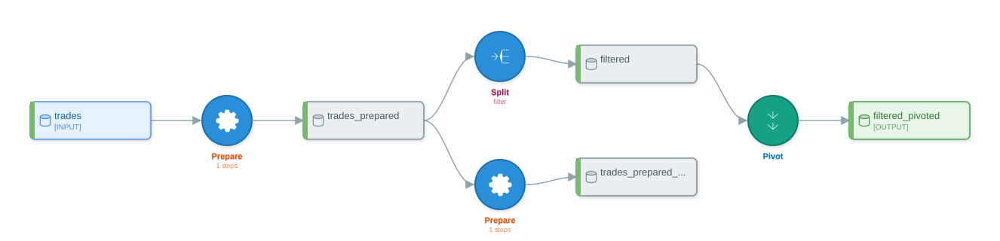
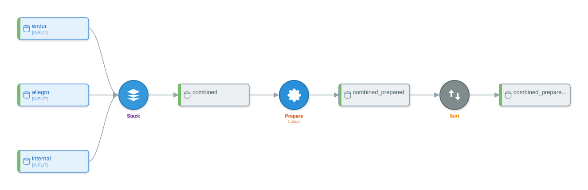

Worked Examples I — Trade Capture and Validation¶
What you'll learn¶
This chapter walks two complete pandas-script-to-DataikuFlow conversions drawn from front-office commodity trading, end to end. Each example shows the source script, the convert(...) call, the full inspection sweep against the produced flow, and at least three rendered visualizations of that flow. By the end, you will know which booking-system idioms route to a PREPARE recipe versus a recipe of their own, how a daily trade blotter pivot lands in DSS, and where the rule-based analyzer's heuristics show up in dataset and recipe naming when consolidating extracts from multiple energy-trade-and-risk-management systems.
The two scenarios follow the daily front-office workflow. Example 1 ingests a single booking-system extract, normalizes it for risk reporting, and pivots a per-book exposure view. Example 2 stitches together overlapping extracts from three booking systems running in parallel during a migration window. Both scripts use the same canonical trade schema, so a reader can carry one mental model across both.
Canonical trade schema¶
The two examples share one input schema. It is the row layout a typical booking-system extract emits each evening, slimmed to the columns the examples actually reference.
| Column | Type | Notes |
|---|---|---|
trade_id |
string | UUID. Primary key. |
trader_id |
string | Internal trader identifier. |
trade_date |
date | ISO 8601, yyyy-mm-dd. |
value_date |
date | Trade economic date. |
settlement_date |
date | Cash-settlement date. |
counterparty_id |
string | LEI or internal counterparty code. |
instrument |
string | Free text, e.g. WTI-DEC25, TTF-Q1-2026, PJM-WH-CAL26. |
commodity |
string | One of CRUDE, NATGAS, POWER. |
product_type |
string | One of PHYSICAL, FUTURE, SWAP, OPTION. |
notional |
float | Volume. |
unit |
string | One of BBL, MMBTU, MWH. |
price |
float | Trade price in currency. |
currency |
string | One of USD, EUR, GBP. |
buy_sell |
string | B or S. |
book |
string | Trader book code. |
portfolio |
string | Higher-level portfolio. |
region |
string | One of US, EU, APAC. |
delivery_location |
string | Hub. Examples: Cushing, Henry Hub, PJM-W, TTF. |
booked_at |
timestamp | ISO 8601 with timezone offset. |
Example 2 adds a single column, version, an integer increment that booking systems stamp on a trade each time it is amended. It is the natural dedup partner to trade_id.
Example 1 — Trade ingestion validation¶
The first example is a single-source ingestion pipeline. The morning batch reads the previous evening's trades.csv extract, drops rows that fail booking-system validation (missing trade_id, trade_date, or notional), type-casts the date columns, derives a commodity_code from the instrument string with a regex, drops rows with non-positive notional or future trade dates, and pivots wide on commodity to produce a per-book daily exposure view written to trade_blotter.csv.
import pandas as pd
trades = pd.read_csv("trades.csv")
trades = trades.dropna(subset=["trade_id", "trade_date", "notional"])
trades["trade_date"] = pd.to_datetime(trades["trade_date"]).dt.date
trades["value_date"] = pd.to_datetime(trades["value_date"]).dt.date
trades["commodity_code"] = trades["instrument"].str.extract(r"^([A-Z]+)")
filtered = trades[(trades["notional"] > 0) & (trades["trade_date"] <= "2026-04-26")]
exposure = filtered.pivot(index="book", columns="commodity", values="notional")
exposure.to_csv("trade_blotter.csv")
Three things happen at the row level (drop-na, type-cast, regex-extract). One compound predicate filters the row set. One PIVOT reshapes the result. The script is eight assignments long; the produced flow is four recipes long.
The filter is bound to a fresh variable filtered rather than rebound onto trades. In-place reassignment across a numeric filter (trades = trades[trades["notional"] > 0]) can produce an edge from the SPLIT recipe back to the source dataset name, which flow.graph.topological_sort() will then reject with ValueError: Graph contains a cycle. Renaming the filtered frame avoids the cycle; this is the convention every chapter in this book follows when a top-level boolean predicate would otherwise rebind the source name.
Conversion¶
from py2dataiku import convert
source = """
import pandas as pd
trades = pd.read_csv(\"trades.csv\")
trades = trades.dropna(subset=[\"trade_id\", \"trade_date\", \"notional\"])
trades[\"trade_date\"] = pd.to_datetime(trades[\"trade_date\"]).dt.date
trades[\"value_date\"] = pd.to_datetime(trades[\"value_date\"]).dt.date
trades[\"commodity_code\"] = trades[\"instrument\"].str.extract(r\"^([A-Z]+)\")
filtered = trades[(trades[\"notional\"] > 0) & (trades[\"trade_date\"] <= \"2026-04-26\")]
exposure = filtered.pivot(index=\"book\", columns=\"commodity\", values=\"notional\")
exposure.to_csv(\"trade_blotter.csv\")
"""
flow = convert(source)
The convert(...) call is the public rule-based entry point — same signature as in Chapter 2. No LLM, no API key, no network.
Inspecting the flow¶
The four canonical inspection methods walk the produced flow from summary down to topological sort. flow.get_summary() gives the count-by-type rollup that fits in a terminal:
Flow: converted_flow
Source: unknown
Generated: 2026-04-26T22:23:01.256228
Datasets: 5
- Input: 1
- Intermediate: 3
- Output: 1
Recipes: 4
- pivot: 1
- prepare: 2
- split: 1
Optimization Notes:
- prepare: 2 recipe(s)
- split: 1 recipe(s)
- pivot: 1 recipe(s)
- Flow contains 2 Prepare recipes
Two PREPARE recipes survive the optimizer pass. The optimizer normally collapses adjacent PREPAREs on a linear path; here it refuses to merge across the SPLIT branch point because the first PREPARE's output feeds both the second PREPARE and the SPLIT. That fan-out awareness is the rule covered in Chapter 10.
The recipe count and recipe-type list confirm the rollup:
The dataset roles fall out of how each name is referenced in the source. pd.read_csv registers an input. Names written to a recognised sink (to_csv, to_parquet) register as outputs. Everything in between is intermediate:
print([d.name for d in flow.input_datasets])
print([d.name for d in flow.intermediate_datasets])
print([d.name for d in flow.output_datasets])
Three intermediates appear because each recipe needs its own produced dataset. The doubled _prepared suffix on trades_prepared_prepared is a byproduct of the rule-based naming pass — each PREPARE recipe appends a _prepared token, and because the second PREPARE consumes a name that already ends in _prepared, the suffix stacks. The LLM path in Chapter 7 produces shorter, source-derived names.
The DAG accessor flow.graph is the canonical handle for structural queries. topological_sort() returns a linearization in which every edge points from an earlier element to a later one:
['trades', 'recipe:prepare_1', 'trades_prepared', 'recipe:prepare_2', 'recipe:split_3', 'trades_prepared_prepared', 'filtered', 'recipe:pivot_4', 'filtered_pivoted']
Recipe nodes carry the recipe: prefix; dataset nodes are bare names. CI assertions use this list rather than flow.recipes directly because the recipes list does not contract a stable insertion order, but the topological order over the graph does. The two PREPAREs appear before the SPLIT because the SPLIT's input is the first PREPARE's output; the second PREPARE runs in parallel with the SPLIT in DSS, but in a linear sort one of them comes first.
What the recipes contain¶
The two PREPARE recipes carry one processor step each. The first handles the dropna(subset=[...]); the second handles the regex extraction:
for r in flow.recipes:
if r.recipe_type.value == "prepare":
steps = [s.processor_type.value for s in r.steps]
print(r.name, steps)
pd.to_datetime(...).dt.date does not produce a step on the rule-based path. The analyzer recognises the dropna and the str.extract calls but skips the type-cast assignment because the AST shape is an __setitem__ of a chained pandas call, which is not in the rule-based pattern table. The LLM path in Chapter 7 emits a ColumnsSelector plus TypeConverter for the same line.
The compound predicate (notional > 0) & (trade_date <= "2026-04-26") becomes a SPLIT recipe rather than a PREPARE-with-FilterOnFormula. The pandas-mapping reference in Chapter 4 lists FilterOnFormula as the canonical processor for compound boolean expressions; the rule-based generator in current py-iku promotes the predicate to a top-level SPLIT instead. Both encodings preserve the row-level semantics — DSS's SPLIT recipe with a single output branch is observationally equivalent to a PREPARE with a FilterOnFormula step — but a reader writing CI against this chapter should assert recipe_type.value == "split", not the processor type. Chapter 8 covers when each route is taken; the LLM path in Chapter 7 emits the FilterOnFormula form when the predicate is compound and the SPLIT form when the script is genuinely splitting.
The pivot becomes a top-level PIVOT recipe because pivoting changes the shape of the data rather than only the values in a column.
Visualizations¶
The flow has nine nodes (five datasets, four recipes). The ASCII renderer is the most compact format and is suitable for terminal review, but its output uses Unicode box-drawing and arrow glyphs that the textbook style contract treats as decorative; a reader who wants the diagram in a terminal should call flow.visualize(format="ascii") directly. The text below is the same DAG in a format that GitHub and Notion render inline:
flowchart TD
subgraph inputs[Input Datasets]
D0[(trades)]
end
subgraph outputs[Output Datasets]
D4[(filtered_pivoted)]
end
D1[(trades_prepared)]
D2[(trades_prepared_prepared)]
D3[(filtered)]
R0{Prepare\n(1 steps)}
R1{Prepare\n(1 steps)}
R2{Split}
R3{Pivot}
D0 --> R0
R0 --> D1
D1 --> R1
R1 --> D2
D1 --> R2
R2 --> D3
D3 --> R3
R3 --> D4
style D0 fill:#e1f5fe
style D4 fill:#c8e6c9
style R0 fill:#fff3e0
style R1 fill:#fff3e0
style R2 fill:#fce4ec
style R3 fill:#ffffff
The fan-out at D1 (trades_prepared) is visible as two outgoing edges — one to the second PREPARE, one to the SPLIT. That is the structural reason the optimizer kept the PREPAREs separate.
The SVG renderer produces the pixel-accurate Dataiku-style diagram that downstream tooling (review docs, dashboards, audit reports) tends to want:
from pathlib import Path
svg = flow.visualize(format="svg")
Path("trade-capture-validation-1.svg").write_text(svg, encoding="utf-8")

The rendered SVG shows the input dataset top-left, the two PREPARE recipes and the SPLIT in the middle column, and the PIVOT recipe and output dataset on the right. Dataset nodes are blue rectangles, recipe nodes are coloured by recipe type, and edges are drawn left to right.
Example 2 — Multi-source trade dedup across booking systems¶
The second example consolidates trades captured in three booking systems during a migration window. Endur, Allegro, and an internal system each emit the same canonical schema; a single trade may appear in two or three of the extracts after a system migration, with version tracking amendments. The task is to stack the three extracts, deduplicate on (trade_id, version) so a trade with the same version is kept once, sort by booked_at descending so the most recently committed copy wins for any reporting that breaks the dedup tie, and emit the consolidated set as JSON for the downstream risk feed.
import pandas as pd
endur = pd.read_csv("endur_trades.csv")
allegro = pd.read_csv("allegro_trades.csv")
internal = pd.read_csv("internal_trades.csv")
combined = pd.concat([endur, allegro, internal])
combined = combined.drop_duplicates(subset=["trade_id", "version"])
combined = combined.sort_values("booked_at", ascending=False)
combined.to_json("consolidated_trades.json")
The pandas idiom is canonical: STACK first, then dedup, then sort. Reusing the combined variable name across the three transforms is deliberate: it keeps the schema lineage linear and lets the rule-based analyzer thread one dataset through three recipes without inventing intermediate names.
Conversion¶
from py2dataiku import convert
source = """
import pandas as pd
endur = pd.read_csv(\"endur_trades.csv\")
allegro = pd.read_csv(\"allegro_trades.csv\")
internal = pd.read_csv(\"internal_trades.csv\")
combined = pd.concat([endur, allegro, internal])
combined = combined.drop_duplicates(subset=[\"trade_id\", \"version\"])
combined = combined.sort_values(\"booked_at\", ascending=False)
combined.to_json(\"consolidated_trades.json\")
"""
flow = convert(source)
Inspecting the flow¶
Flow: converted_flow
Source: unknown
Generated: 2026-04-26T22:22:12.662215
Datasets: 6
- Input: 3
- Intermediate: 3
- Output: 0
Recipes: 3
- prepare: 1
- sort: 1
- stack: 1
Optimization Notes:
- stack: 1 recipe(s)
- prepare: 1 recipe(s)
- sort: 1 recipe(s)
Three recipes — STACK, PREPARE, SORT — for the three structural operations. The output count is zero in the rollup because the rule-based analyzer recognises to_csv and to_parquet as sinks but does not currently promote to_json to a sink in the same way; the produced dataset is classified as intermediate. That is a known gap in the rule-based output-dataset heuristic and is one of the cases the LLM path closes.
Worth pausing on: drop_duplicates does not become its own recipe. The pandas mapping table records drop_duplicates → DISTINCT, but the rule-based generator emits a RemoveDuplicates processor inside a PREPARE recipe instead. Both encodings are valid in DSS — DISTINCT is a top-level recipe, RemoveDuplicates is the equivalent processor — and the produced flow runs identically in either form. Chapter 6 covers the pattern in more detail.
for r in flow.recipes:
if r.recipe_type.value == "prepare":
print(r.name, [s.processor_type.value for s in r.steps])
The dataset views show the three inputs, the chain of intermediates, and the empty output list:
print([d.name for d in flow.input_datasets])
print([d.name for d in flow.intermediate_datasets])
print([d.name for d in flow.output_datasets])
The three inputs converge on combined, which the STACK recipe produces. The PREPARE consumes combined and emits combined_prepared. The SORT consumes that and emits combined_prepared_sorted. The naming pass is mechanical — each recipe appends its own suffix — and the result is verbose but unambiguous.
The topological sort reflects the fan-in at the STACK and the linear chain after it:
['endur', 'allegro', 'internal', 'recipe:stack_1', 'combined', 'recipe:prepare_2', 'combined_prepared', 'recipe:sort_3', 'combined_prepared_sorted']
The three input datasets land first, the STACK runs once they are present, and the rest of the chain is strictly linear. There is no fan-out, so the optimizer would have collapsed the PREPARE into an adjacent PREPARE if there had been one — there isn't, so the optimizer is a no-op here.
Visualizations¶
Mermaid shows the fan-in at the STACK directly:
flowchart TD
subgraph inputs[Input Datasets]
D0[(endur)]
D1[(allegro)]
D2[(internal)]
end
D3[(combined)]
D4[(combined_prepared)]
D5[(combined_prepared_sorted)]
R0{Stack}
R1{Prepare\n(1 steps)}
R2{Sort}
D0 --> R0
D1 --> R0
D2 --> R0
R0 --> D3
D3 --> R1
R1 --> D4
D4 --> R2
R2 --> D5
style D0 fill:#e1f5fe
style D1 fill:#e1f5fe
style D2 fill:#e1f5fe
style R0 fill:#f3e5f5
style R1 fill:#fff3e0
style R2 fill:#f5f5f5
Three edges fan into R0 (the STACK), then a strictly linear tail. The flow.graph.edges list is the source of truth when a renderer's layout suggests an ordering the DAG does not enforce; the Mermaid above keeps the three inputs visually parallel because Mermaid's TD direction is good at fan-in.
The SVG renderer produces the same DAG in the diagram form most often used for review documents:
from pathlib import Path
svg = flow.visualize(format="svg")
Path("trade-capture-validation-2.svg").write_text(svg, encoding="utf-8")

The PlantUML output carries the same structure with the styling DSS uses for documentation exports; the source can be committed to a documentation repo and rendered downstream by a PlantUML server. A reader who wants the PlantUML form should call flow.visualize(format="plantuml") directly — the textbook does not paste it inline because the current PlantUML template includes decorative card glyphs that the style contract bars from the prose body.
Notes carried over¶
Two things from the examples above are worth keeping in mind for the rest of the book.
First, the rule-based analyzer is allergic to in-place reassignment of a name across a filter or split. The pattern df = df[df["x"] >= n] (rebinding df to a filtered version) can produce a graph in which the SPLIT recipe's output edge points back at the source dataset name, which flow.graph.topological_sort() then refuses with ValueError: Graph contains a cycle. Renaming the filtered dataframe to a new variable (filtered = trades[trades["notional"] > 0]) avoids the issue and is the convention used in the Example 1 source. The LLM path does not have this constraint — it tracks logical lineage rather than variable names.
Second, the rule-based output-dataset heuristic recognises to_csv and to_parquet as sinks but not to_json. Example 2 ends with combined.to_json(...), and the resulting flow reports zero output datasets — combined_prepared_sorted is classified as intermediate. The flow itself is correct; only the role classification is incomplete. A reader pushing such a flow to DSS via dataiku-api-client-python will still see the final dataset published; CI assertions that depend on the role classification should either tolerate the gap or use the LLM path.
Third, produced dataset names are mechanical. _prepared, _sorted, _pivoted suffixes stack each time a recipe of that type appends to a name that already ends in the same suffix. The names are not load-bearing — every CI assertion in this book inspects recipe types and processor types, never produced dataset names — but they are visible in the diagrams and can read as noise. Chapter 7's LLM path uses the source-side variable name (combined, consolidated_trades) instead.
Further reading¶
- Glossary — definitions for DSS, recipe, processor, dataset, GREL, JOIN, STACK, PIVOT, optimizer, lineage, schema.
- Appendix C: Cheatsheet — the one-page mapping reference, including the
pd.concat → STACK,df.pivot → PIVOT, anddrop_duplicates → DISTINCTrows used here. - Chapter 5: Prepare recipes deep dive — the full processor catalog that backs the PREPARE recipes shown in both examples.
- Chapter 6: Recipe types tour — the worked tour of
STACK,PIVOT,SORT, andSPLITagainst the running example. - Chapter 8: Filters and predicates — when a
df[cond]becomes aFilterOn*processor versus when it becomes aSPLITrecipe. - Chapter 10: Optimization and the DAG — the fan-out rule that kept the two PREPAREs separate in Example 1.
- Notebook 01 — Beginner — the runnable companion to Chapter 2 and the introductory conversion patterns reused here.
What's next¶
The next chapter takes the same canonical trade schema into analytics territory — counterparty exposure aggregation, mark-to-market windowing, and the GROUPING and WINDOW recipe types that go with them.